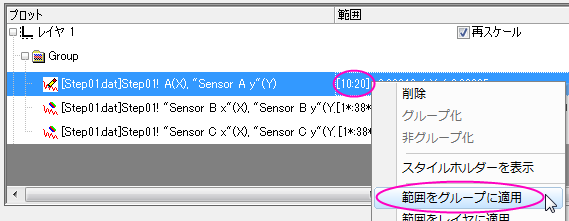
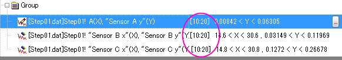
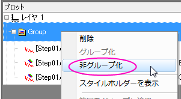
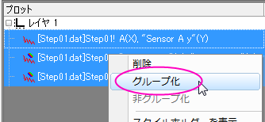

「作図のセットアップ」ダイアログボックスの一番下のパネルには、グラフ内のデータプロットが表示されます。データプロットの追加、削除、置換えやプロット表示範囲、データプロットのグループ化/非グループ化、データプロットの順序などを制御するために使用します。
中央のパネルでデータ列を選択した後、下側パネルでレイヤを選択し、追加ボタンをクリックして、レイヤにデータプロットを追加します。
既存のプロットを置き換えるには
Note:選択したプロットが別のプロットとグループ化されている場合、グラフタイプを変更すると、このグループ内のすべてのプロットのグラフタイプが変わりますが、プロット属性は変わりません。 |
作図のセットアップダイアログボックスの下側パネルで、データプロットの表示範囲を変更することができます。


同じコンテキストメニューを使って、現在のレイヤまたはページ内のすべてのデータプロットに範囲を適用することもできます。
作図のセットアップダイアログボックスを使って、データプロットのグループ化と非グループ化を切り替えることができます。
 |
 |
| 非グループ化 | グループ化 |
各データプロットをドラッグして、順番を入れ替えることができます。
レイヤノードまたはグループノードを右クリックして、全ての兄弟を折りたたみまたは全ての兄弟を拡張を選択すると、すべてのレイヤまたはグループノードを折りたたみ、または展開できます。
プレビューボタンをクリックすると、プレビューダイアログが開き、現在の設定でのプロットをグラフに表示します。
テンプレートライブラリに保存されているユーザ定義のグラフテンプレートを使用してグラフをプロットする場合のみ、プレビューダイアログにテンプレートイメージとアクティブレイヤのみを表示チェックボックスが表示されます。
アクティブなレイヤのみを表示にチェックを付けると、プレビューパネルの左上隅にあるレイヤアイコンをクリックしてレイヤを切り替えることができます。レイヤを切り替えると、テンプレートパネルも変更に従います。